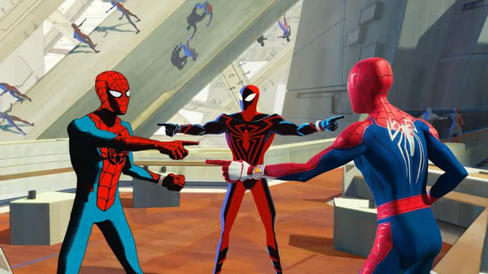
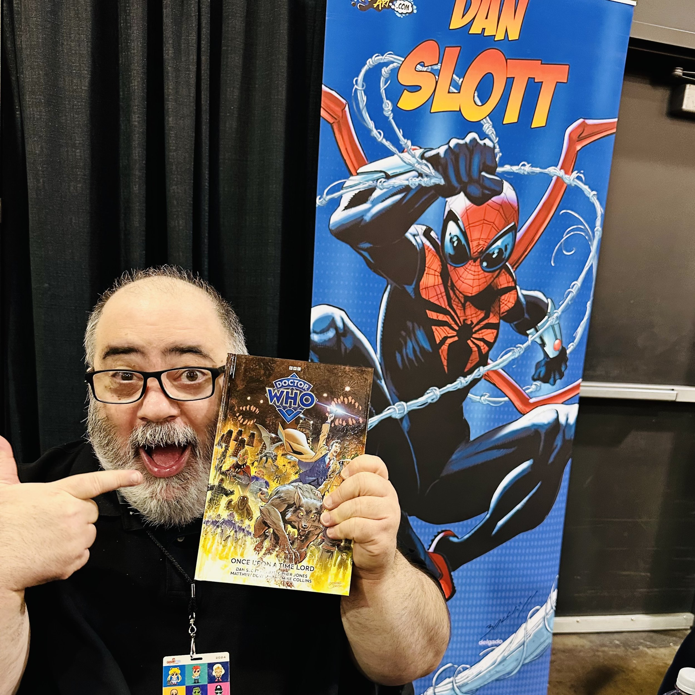

Um universo onde múltiplas versões do Spider - Man coexistem e se entrelaçam em uma intrincada teia de aventuras. Prepare-se para descobrir o que torna este universo tão fascinante!
O Homem-Aranha, assim como diversos outros heróis populares, possui dezenas de versões que foram se acumulando ao longo dos anos, não apenas nos quadrinhos, mas nas mais diversas mídias.
O Aranhaverso é um conceito que explora a ideia de que existem várias versões do Spider-Man em diferentes dimensões. Essa ideia permite uma infinidade de histórias e possibilidades, cada uma trazendo uma nova perspectiva sobre o herói aracnídeo.
Estamos falando aqui de muitos Homens-Aranha, o que engloba até mesmo o Aranha japonês da série da década de 70 e o antropomórfico Porco-Aranha, além é claro de alguns originais como o Homem-Aranha Punk e a Spider-Gwen, que foi extremamente bem recebida e, não à toa, recebe papel de destaque na animação Homem-Aranha no Aranhaverso. Como base para sua história, Slott usa um conceito inserido por J. Michael Strackynzki quando o escritor escreveu as histórias do Homem-Aranha mais de 15 anos atrás: a ideia de que os dons de heróis (e vilões) que usam animais como representação de seus poderes advém de um "totem" relacionado àquele animal. No caso de Peter Parker, obviamente, a aranha. Foi durante essa fase que tivemos a chegada do vilão Morlun, uma espécie de vampiro cósmico que se alimenta da "energia totêmica" dos seres com poderes aracnídeos.
Slott resgata Morlun para sua história, mas agora com uma família inteira de vampiros, e viajando por dimensões para drenar a vida do máximo possível de Homens-Aranha. Até que os heróis dessas dimensões decidem se unir para enfrentar a ameaça de uma vez por todas. Infelizmente, e curiosamente, o maior trunfo de Aranhaverso é também o seu maior problema. A saga é muito satisfatória em trabalhar cada um dos Homens-Aranha, e é muito divertido ver como se relacionam. No entanto, o excesso de fanservice e demonstração de conhecimento de Slott da mitologia é, dessa vez, talvez o único ponto a se destacar. A história é divertida e tem bons momentos, mas parece que não houve muita dedicação na trama.
O Aranha Verso foi introduzido nas histórias em quadrinhos pela Marvel Comics, com a famosa série 'Spider-Verse', escrita por Dan Slott. Nesta série, vemos várias versões do Spider-Man se unindo para enfrentar uma ameaça comum.
Foi então que, em 2015, o roteirista Dan Slott, que na época era o responsável pela revista principal do herói aracnídeo (onde ficou por longos 10 anos) decidiu que seria uma boa ideia usar todo o seu amplo conhecimento da mitologia do Homem-Aranha para simplesmente reunir TODAS as versões existentes do herói, em uma trama multiversal. Muitos duvidaram do seu sucesso, mas para o cara que já tinha dado poderes de aranha para toda Nova York em "Ilha das Aranhas" e que tinha feito o Doutor Octopus trocar de corpo com Peter Parker na super criativa fase "Homem-Aranha Superior". Ambas ideias aparentemente bizarras, mas que tiverem uma ótima execução. Então fica bem claro porque a Marvel aprovou sem pestanejar a ideia do Aranhaverso.
